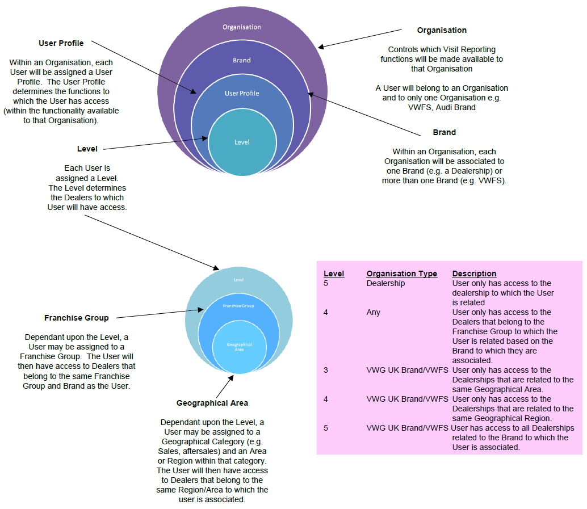

Access to System Functions
Describe how access control works in the system by organisation and by user profile
Information Sharing Rules
Describe how information sharing works
Initially within the system only VWFS and VWG UK Brands will be able to create Actions/Agendas/Visit Reports. As a general principle one Organisation can not update an Action/Agenda/Visit Report that was created by another Organisation.
For example (dependent upon Organisation Reference Data):
- If a User belonging to VWFS creates an Action related to an Audi Dealership, only Users belonging to VWFS will be able to update that Action. It will not be possible for any Users belonging to the Audi Brand to update that Action.
- If a User belonging to the Skoda Brand creates a Visit Report, only Users belonging to the Skoda Brand will be able to update that Visit Report.
* Subject to factors described below and confidentiality rule
In terms of viewing Actions/Agendas/Visit Reports, for example (dependent upon Organisation Reference Data):
- Users belonging to VWFS will have access to view their own and all Actions/Agendas/Visit Reports created by all Brands.
- A User belonging to the Skoda Brand will only be able to view the Actions/Agendas/Visit Reports created by VWFS in relation to Skoda and those Actions/Agendas/Visit Reports created by any Users belonging to the Skoda.
* Subject to factors described below and confidentiality rule
The factors that determine what a User can do in the system will depend upon the following:
- The Organisation to which they belong to (work for) i.e. VWFS or a VWG UK Brand or a Dealership
- The Brand that they are associated to;
Users belonging to a VWG UK Brand will in general only be associated to one Brand.
However, within VWFS it is highly likely that a User belonging to VWFS will be associated to more than one Brand (and highly likely to be associate to all Brands).
- The Business Area or Areas that they work within (e.g. Sales, Aftersales).
- Their User profile
Over time the volume of meetings/actions will increase so as a general principle the information that will be displayed will:
- Initially relate directly to the User (e.g. show only Actions where the User is the owner or creator of the Action).
- Then there will be an option to expand the information to show all actions.
Visit Report Access Principles:
The following provides an overview of the concepts behind access to functionality and dealership information:
